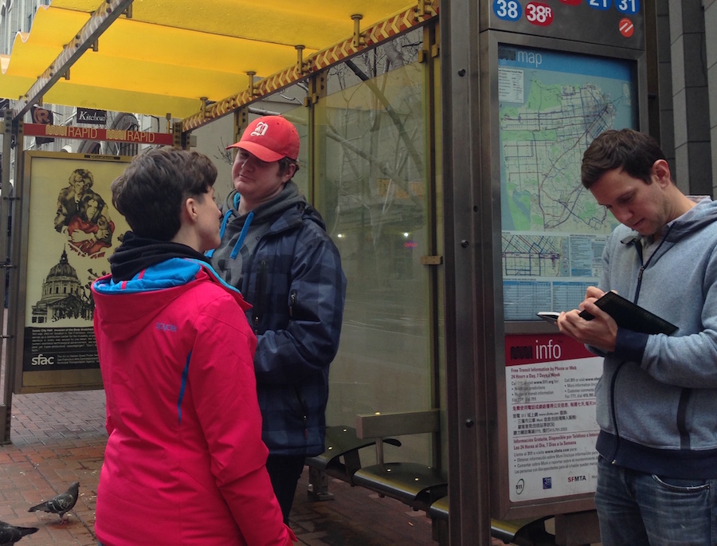

MUNI MOBILE
Team project focused on increasing off-peak ridership for San Francisco's buses and light rail.

CHALLENGE
Define what keeps riders from taking MUNI during off-peak hours and what compels them to take other modes of transportation instead. Expand the existing MUNI app from its current functionality (selling tickets only) to encourage off-peak riding.
SURVEYS & INTERVIEWS

We quickly discovered that safety was not a deciding factor in how San Franciscans choose their modes of transportation. These decisions are instead based almost solely on convenience. Informed by these insights, our design sought to incorporate the best of trip planning, live bus tracking (which was noted as a favorite feature in our survey), and an ever present way to call for help if necessary.
KIOSK & MOBILE DESIGN

Our bus stop kiosk focused on maximizing the benefits of live GPS bus tracking (a favorite feature according to our surveys and interviews).
For the mobile app we added simple trip planning for new riders and live bus tracking for seasoned riders to the existing app's functionality as a ticket purchasing platform.
Check out the prototype here:
Check out the prototype here: